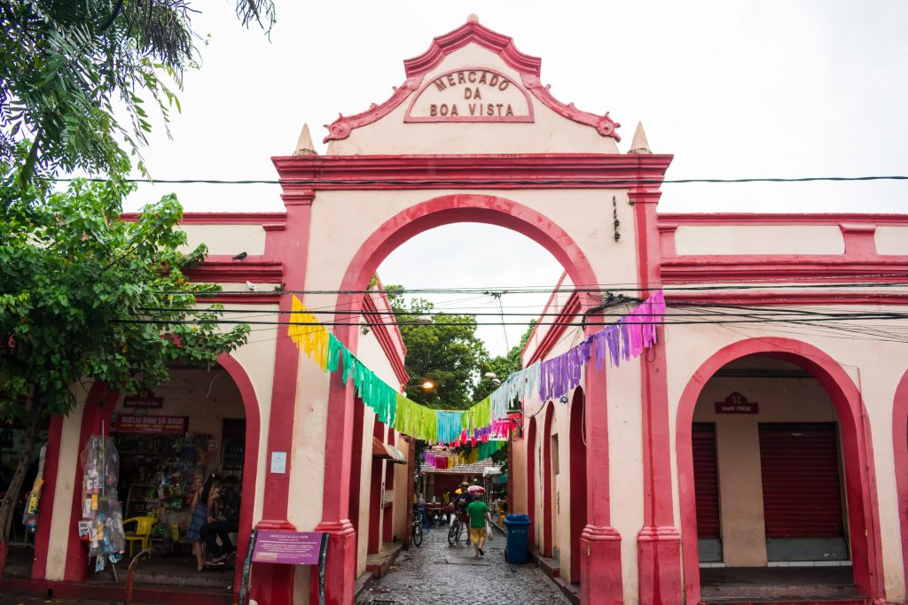

O instituto fica em um complexo arquitetônico em estilo medieval e guarda o Museu Castelo São João, a Pinacoteca, uma biblioteca, uma capela e um jardim de esculturas. Com um dos maiores acervos de armas brancas do mundo, reúne mais de 3 mil peças, sendo que a maioria veio da Europa e da Ásia. Ali também dá para admirar a coleção de pinturas, tapeçarias, armaduras, espadas, punhais e facas.
Situada na margem oposta do Rio Capibaribe, a Oficina Brennand funciona como um museu-ateliê do ceramista Francisco Brennand. Datado de 1971 e instalado em uma antiga fábrica de tijolos e telhas, o local é único e exibe um extraordinário conjunto arquitetônico, o qual, inclusive, está em constante mutação. Imperdível, esse passeio permite conhecer as peças de um dos mais importantes ceramistas brasileiros e rende lindas fotos.
Mercado de São José
Bem pertinho do Recife Antigo, o Mercado de São José é ideal para quem quer comprar presentes, já que tem no artesanato regional seu ponto forte. Sabe o que isso significa? Que ele oferece várias opções de souvenires, como ímãs de geladeira, enfeites, redes, instrumentos musicais e até cachaças.
Por outro lado, se você não dispensa experimentar a gastronomia típica, o Mercado da Boa Vista não decepciona. Mesmo porque o lugar serve pratos de dar água na boca. Não deixe de provar o “Arrumadinho”, receita tradicional preparada com feijão verde, farofa, vinagrete, carne de sol e queijo frito